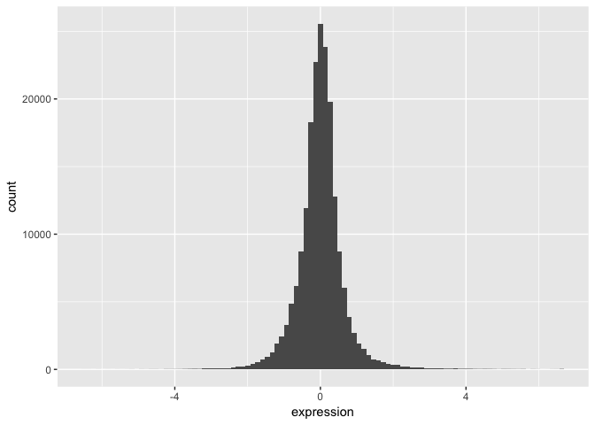
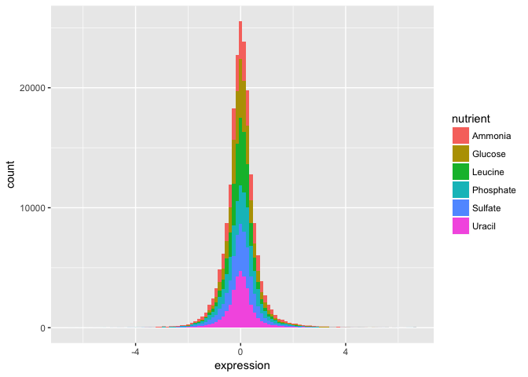
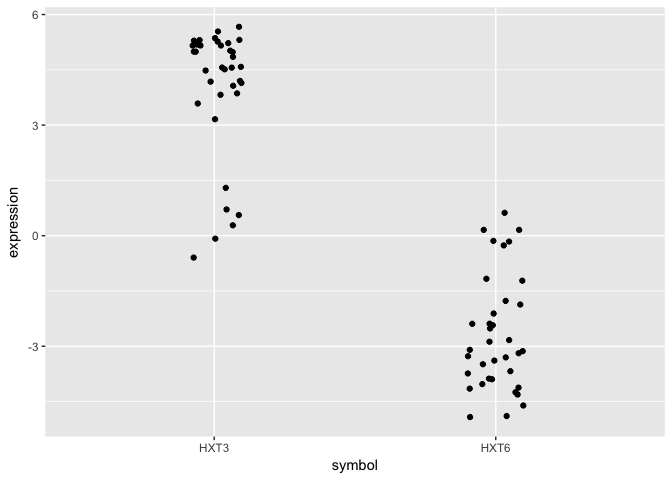
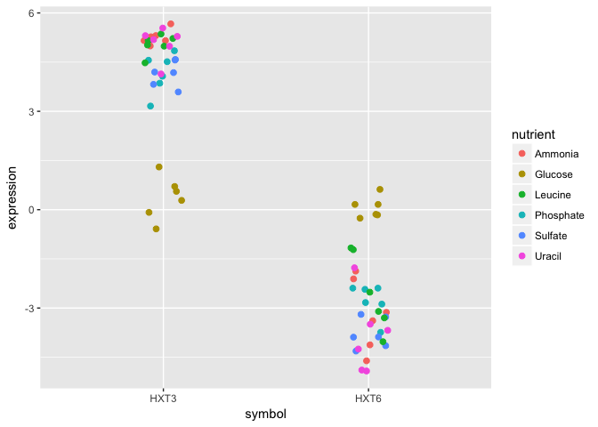
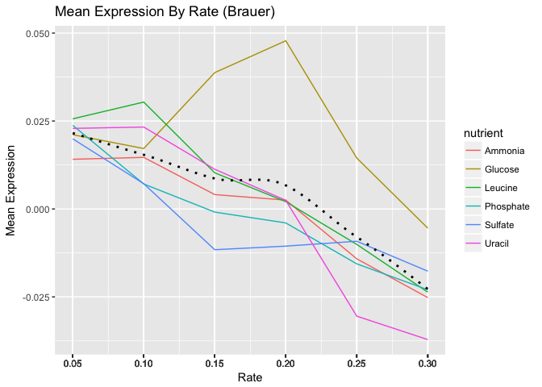

ggplot2 homework
Key Concepts
- geoms
- aesthetic mappings
- statistical layers
- scales
- ggthemes
- ggsave
Getting Started
Load the ggplot2, dplyr, readr packages, and read the tidy “Brauer” data into R using the read_csv() function. Make sure you store the results in an object called ydat.
n.b. read_csv() is not the same as read.csv()
library(ggplot2)
library(dplyr)
library(readr)
library(ggthemes)
# Preferably: read data from web
ydat <- read_csv("http://bioconnector.org/data/brauer2007_tidy.csv")
# Alternatively read from file:
# ydat <- read_csv("data/brauer2007_tidy.csv")
# Display the data
ydat## Source: local data frame [198,430 x 7]
##
## symbol systematic_name nutrient rate expression
## (chr) (chr) (chr) (dbl) (dbl)
## 1 SFB2 YNL049C Glucose 0.05 -0.24
## 2 NA YNL095C Glucose 0.05 0.28
## 3 QRI7 YDL104C Glucose 0.05 -0.02
## 4 CFT2 YLR115W Glucose 0.05 -0.33
## 5 SSO2 YMR183C Glucose 0.05 0.05
## 6 PSP2 YML017W Glucose 0.05 -0.69
## 7 RIB2 YOL066C Glucose 0.05 -0.55
## 8 VMA13 YPR036W Glucose 0.05 -0.75
## 9 EDC3 YEL015W Glucose 0.05 -0.24
## 10 VPS5 YOR069W Glucose 0.05 -0.16
## .. ... ... ... ... ...
## Variables not shown: bp (chr), mf (chr)Problem Set
Follow the prompts and use ggplot2 to reproduce the plots below.
Part 1
We can start by taking a look at the distribution of the expression values.
- Plot a histogram of the expression variable, and set the bin number equal to 100.

- Check the distribution of each nutrient in the data set by adjusting the fill aesthetic. Use the same bin number for this histogram.

Wow. That’s ugly. Might be a candidate for accidental aRt but not very helpful for our analysis.
- Now split off the same histogram into a faceted display with 3 columns.

The basic exploratory process above confirms that the overall distribution (as well each distribution by nutrient) is normal.
Part 2
Let’s compare the genes with the highest and lowest average expression values.
We can figure out which these are using some familiar logic:
- Take the original ydat data frame …
- Then group by symbol …
- Then summarize mean of all expression values for that symbol …
- Then arrange descending by the mean …
- Then filter for the first or last row.
The code below implements that pipeline in dplyr syntax:
ydat %>%
group_by(symbol) %>%
summarise(meanexp = mean(expression)) %>%
arrange(desc(meanexp)) %>%
filter(row_number() == 1 | row_number() == n())## Source: local data frame [2 x 2]
##
## symbol meanexp
## (chr) (dbl)
## 1 HXT3 4.010000
## 2 HXT6 -2.681667The output tells us that the gene with the highest mean expression is HXT3, while the gene with the lowest mean expression is HXT6.
- Subset the data to only include these genes, and create a stripplot that has expression values as “jittered” points on the y-axis and the gene symbols the x-axis.
HINT you can add a “jitter” position to
geom_point()but it’s easier to control width of the effect if you usegeom_jitter()

- Now map each observation to its nutrient by color and adjust the size of the points to be 2.

Although these two genes are on opposite ends of the distribution of average expression values, they both seem to express similar amounts when Glucose is the restricted nutrient.
Part 3
Now let’s try to make something that has a little bit more of a polished look.
- Using dplyr logic, create a data frame that has the mean expression values for all combinations of rate and nutrient (hint: use
group_by()andsummarize()). Create a plot of this data with rate on the x-axis and mean expression on the y-axis and lines colored by nutrient.

- Add black dotted line (lty=3) that represents the smoothed mean of expression across all combinations of nutrients and rates.

- Change the scale to include breaks for all of the rates.
HINT The
read_csv()function read in the rate variable as continuous rather than discrete. There are a few ways to remedy this, but first see if you can set the scale for the x axis variable without changing the dataframe.

- By default
ggplot()will name the x and y axes with names of their respective variables. You might want to apply more meaningful labels. Change the name of the x-axis to “Rate”, the name of the y-axis to “Mean Expression” and the plot title to “Mean Expression By Rate (Brauer)”
HINT
?labswill pull up the ggplot2 documentation on axes labels and plot titles.

- Add a theme from the ggthemes package. The plot below is based on Edward Tufte’s book The Visual Display of Quantitative Information. Choose a theme that you like, but choose wisely – some of these themes will override other adjustments you’ve made to your plot above, including axis labels.
HINT 1:
library(ggthemes)not working for you? Install the package first.
HINT 2 You can either do this by trial-and-error or check out the package vignette to get an idea of what each theme looks like: https://github.com/jrnold/ggthemes
- The last step is to save the plot you’ve created. Write your plot to a 10 X 6 PDF using a ggplot2 function.